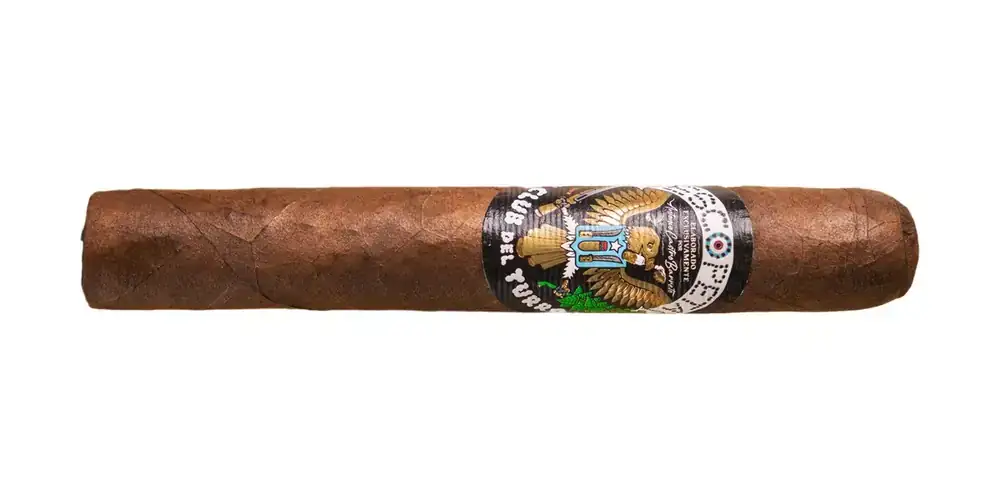

Escopeta
De El Club del Turro · Río Grande, Puerto Rico
Capote Corojo; tripa Corojo puertorriqueño y Ligero dominicano.
- Capa: Habano Vuelta Abajo (HVA)
- Fortaleza: Fuerte
- Vitolas: Robusto 5" x 50
Fuentes: 1
Ver Escopeta en la app, califícalo y guárdalo en Mi Hoja.